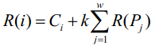

2008北京奥运会即将开幕，举国上下都在为这一盛事做好准备。为了高效率、成功地举办奥运会，对物流系统
进行规划是必不可少的。物流系统由若干物流基站组成，以 1 … N 进行编号。每个物流基站 i 都有且仅有一个
后继基站 Si，而可以有多个前驱基站。基站 i 中需要继续运输的物资都将被运往后继基站 Si，显然一个物流基
站的后继基站不能是其本身。编号为 1 的物流基站称为控制基站，从任何物流基站都可将物资运往控制基站。注
意控制基站也有后继基站，以便在需要时进行物资的流通。在物流系统中，高可靠性与低成本是主要设计目。对于
基站 i ，我们定义其“可靠性” R(i) 如下：设物流基站 i 有 w 个前驱基站 P1,P2, … Pw ，即这些基站以 i
为后继基站，则基站 i 的可靠性 R(i) 满足下式：

其中 Ci 和 k 都是常实数且恒为正，且有 k 小于 1 。整个系统的可靠性与控制基站的可靠性正相关，我们
的目标是通过修改物流系统，即更改某些基站的后继基站，使得控制基站的可靠性 R(1) 尽量大。但由于经费限制
，最多只能修改 m 个基站的后继基站，并且，控制基站的后继基站不可被修改。因而我们所面临的问题就是，如
何修改不超过 m 个基站的后继，使得控制基站的可靠性 R(1) 最大化。
| F.A.Qs | Home | Discuss | ProblemSet | Status | Ranklist | Contest | 入门OJ | ModifyUser Xeonacid | Logout | 捐赠本站 |
|---|